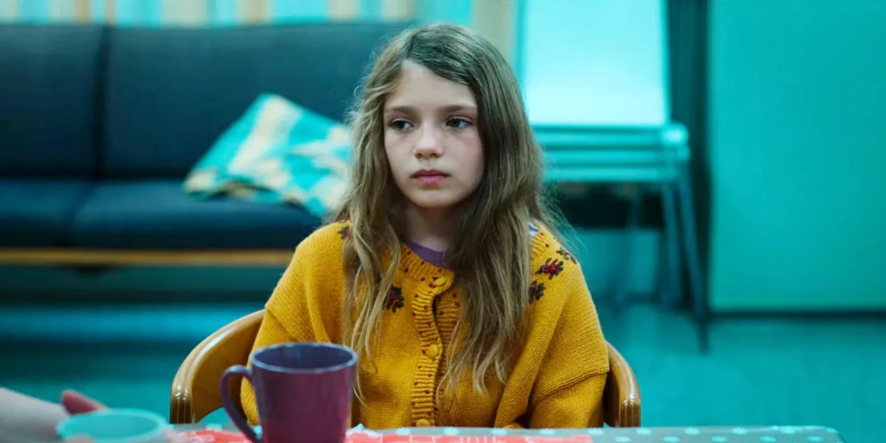
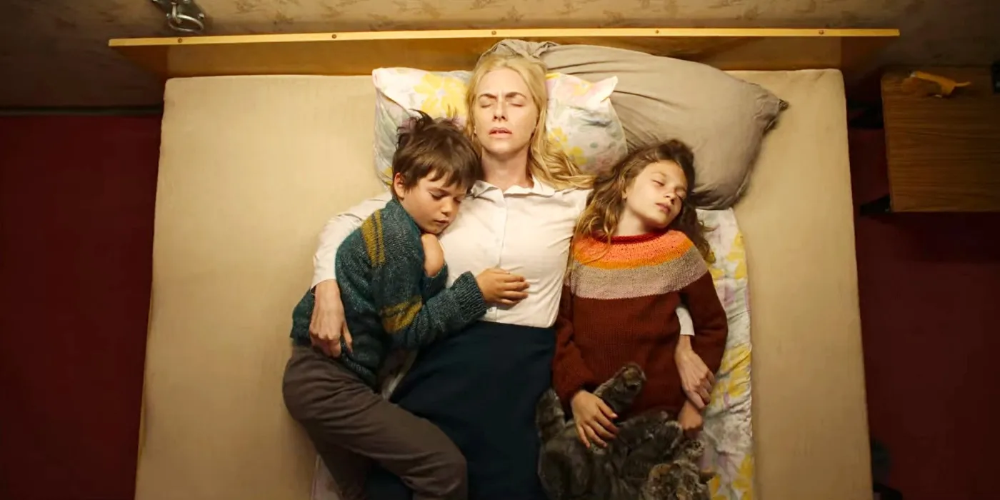

SUMMARY
- "Dear Child" is a gripping German thriller on Netflix, but it is not based on a true story. The events and characters are entirely fictional.
- The series is based on the 2019 novel "Liebes Kind" by Romy Hausmann, but the Netflix adaptation deviates slightly from the book to create something fresh.
- The show follows the perspective of different characters and tells a story filled with twists, leaving the audience on the edge of their seats and eager to unravel the truth.
Dear Child revolves around a mysterious 13-year-old missing person's case that abruptly gets reopened following the discovery of a woman and a child, and the intriguing plot has some viewers wondering if the series on Netflix is based on a true story. The German thriller series tells the story over the course of six intense and enthralling episodes, and it's hard not to get swept up in the narrative to the point where it feels real. The television show takes many twists and turns and leaves the audience on the edge of their seats, desperately wondering the truth behind the bewildering case.
The cast of Dear Child includes Kim Riedle as Lena, Hans Löw as Gerd Bühling, Naila Schuberth as Hannah, Sammy Schrein as Jonathan, Justus von Dohnányi as Matthias, Julika Jenkins as Karin, and Haley Louise Jones as Aida Kurt. Lena is the woman who went missing years ago before she escaped from her captor and was hit by a car while on the run, leaving her badly injured and in a coma. However, the most puzzling aspect of the whole ordeal is Hannah — a young girl who claims to be her daughter and knows much more than she lets on.
Netflix's Dear Child Is Not Based On A True Story
Thankfully, Dear Child on Netflix is not based on a true story. Of course, true crime cases similar, but not completely identical, to Lena, Hannah, and Jonathan's horrific situation have occurred. But for the sake of the events of the German television series, they did not happen in real life. The tale in the six episodes of Dear Child is entirely fictional and was created for entertainment purposes for the streaming service.
Dear Child Is Based On A Book From 2019
Although Dear Child is not inspired by a true story, it is based on the 2019 novel of the same name by Romy Hausmann. According to Tudum by Netflix, Dear Child is the English translation from the German book's original title, Liebes Kind, and the Netflix series' director and head writer, Isabel Kleefeld, read the novel in one night and was immediately inspired to adapt the story into a television show. Kleefeld said:
"Dear Child is told from the point of view of each of the participants, and the perspective changes again and again. The result is an exciting game with reality, a puzzle that the audience can always add to and reassemble. It is the story of a crime that has many victims, directly or indirectly."
Although the show is a direct adaptation of the book, the Netflix series strayed a bit from the novel. It can be difficult to translate the pages to the screen without changing anything because sometimes the conflict, the story, and the characters are not as effective on a different medium as in the original source. As for Dear Child, the writers tried to stay loyal while still creating something fresh, which is why they added the character of Aida Kurt, who did not appear in the book.